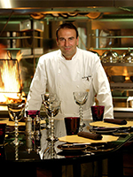

Повара

Василий Иванов – шеф-повар "BARrel"
- 35 лет
- начал карьеру в 15 лет
- стал шефом в 28
- обожает мясо
- для гостей готовит как для себя
Василий Иванов – шеф-повар "BARrel"
Денис Борисенко – су-шеф "BARrel"
Антон Бабич – бармен "BARrel"
Константин Кравцов – бармен "BARrel"